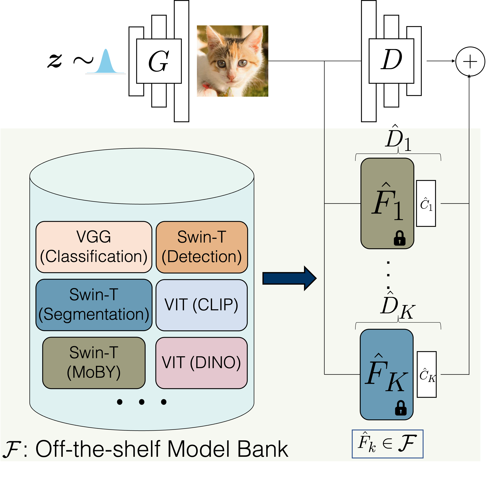

|
I am a first year PhD student at Robotics Institute, Carnegie Mellon University (CMU), where I am advised by Prof. Jun-Yan Zhu.
My research interests lie in computer vision specifically generative models, self-supervision, and few-shot learning.
Email / LinkedIn / Resume / Google Scholar |
 |
|
|
|
|  |
We show that pretrained computer vision models can significantly improve performance when used in an ensemble of discriminators.
Our method improves FID by 1.5x to 2x on cat, church, and horse categories of LSUN.
[Paper] [Webpage] [Code] |

|
We propose a robust attribution training methodology ART that maximizes the alignment between the input and its attribution map.
ART achieves state-of-the-art performance in attributional robustness and weakly supervised object localization on CUB dataset.
[Paper] [Webpage] [Code] |

|
Used self-supervision techniques - rotation and exemplar, followed by manifold mixup for few-shot classification tasks.
The proposed approach beats the current state-of-the-art accuracy on mini-ImageNet, CUB and CIFAR-FS datasets by 3-8%.
[Paper] [Code] |

|
ShapeVis is a scalable visualization technique for point cloud data inspired from topological data analysis.
It captures the underlying geometric and topological structure of the data in a compressed graphical representation.
|

|
We analyzed robust models for vulnerability against adversarial perturbations at the latent layers and proposed a finetuning algorithm which adversarailly trains latent layers of network.
[Paper] [Code] |
|
|